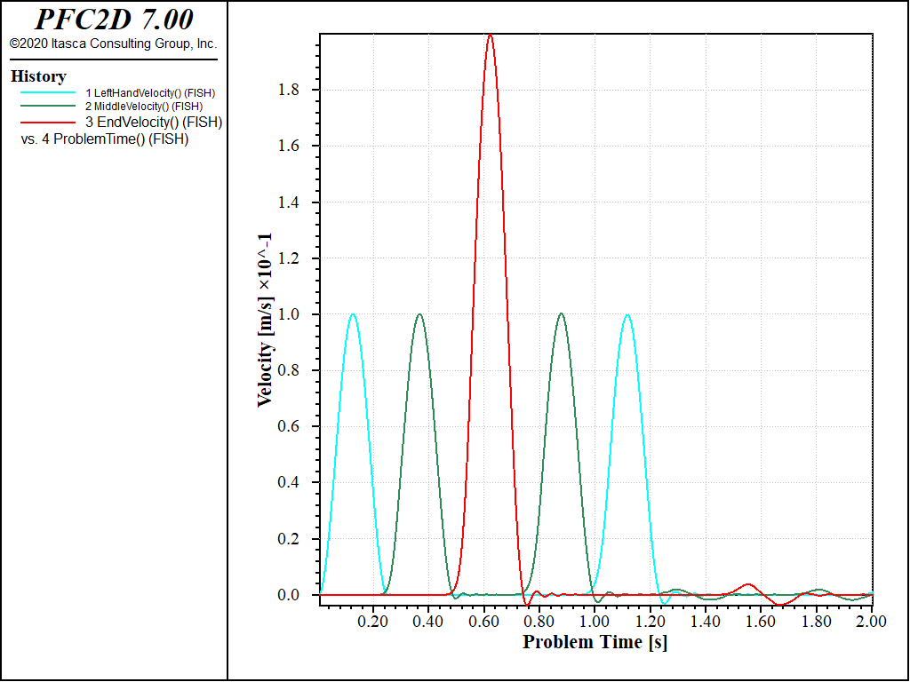
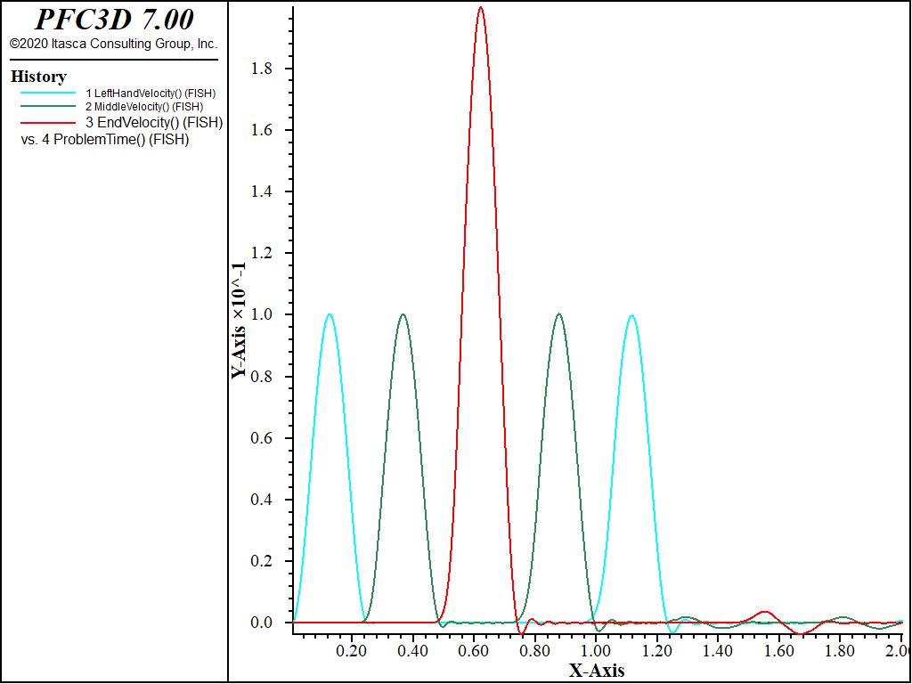

颗粒集合体中的波传播
问题描述
注意
本算例的项目文件可在 PFC 中查看或运行。[1]所用的数据文件（data files）列于本算例末尾。
波在离散体集合体中的传播通常是色散的。也就是说，视波速依波长而定，特别是对于接近平均颗粒尺寸的波长。对于较长的波长，其传播特性类似于没有内部长度尺度的连续弹性介质中的传播。以下算例说明了平面波通过由 50 个相互黏结的颗粒串成的一维“杆”的传播过程。杆的右端为自由端，左端为“静态边界”，可吸收任何入射波形。同时在左端边界注入一个输入脉冲。为吸收波，左端边界以介质的声阻抗 \(Cρ\) 作为终止条件，其中 \(C\) 为波速，\(ρ\) 为密度。下面将对此作更详细的讨论。
为了建立连续体参数与颗粒参数之间的等效关系，我们假定颗粒串等效于一连续弹性杆。等效杆在 3D 中具有半径为 \(R\) 的圆形截面，在 2D 中具有高度为 \(2R\)、厚度为单位厚度的矩形截面，其中 \(R\) 为颗粒半径。在轴向方向上，每个颗粒在 3D 中对应于长度为 \(2R\) 的实心圆柱体，在 2D 中对应于长度为 \(2R\) 的实心矩形棱柱。杨氏模量表示为
其中 \(F\) 为接触力，\(u\) 为接触位移。注意到对于某个接触有 \(F/u = k_n\)\(/2\)（其中 \(k_n\) 是为颗粒定义的法向刚度），可得
等效颗粒密度 \(u̇\) 通过令颗粒质量等于等效杆单元的质量求得，由此得到
对于纵波，
代入公式 (2) 并重新整理：
给定杆的波速和密度，所需的颗粒刚度与颗粒密度即可分别由公式 (5) 和公式 (3) 求得。
对于连续介质中的平面波，应力与颗粒速度 \(u̇\) 之间通过声阻抗 \(Cρ\) 相联系：
若在人工边界上强制满足这一关系，则边界将吸收所有入射的动能量（因为该边界的本构行为与杆件无限延伸时的本构行为完全相同）。在方程 (6) 中将 \(σ\) 替换为 {二维下为 \(F/2R\)，三维下为 \(F/πR²\)}，即可得到边界力 \(F\) 与速度之间的关系：
为施加给定的速度脉冲 \(U̇(t)\)，在边界上叠加两倍的等效力（其中系数 2 体现了能量在“真实”杆件与“虚拟”杆件之间的均等分配，后者由端部阻抗表示）：
最后，为保证真实部分与虚拟部分之间的对称性，将边界颗粒的质量设为其余颗粒质量的一半。
数值模型
数据文件“wave_propagation.dat (2D)”和“wave_propagation.dat (3D)”分别模拟二维和三维中由一排 50 个黏结颗粒组成的杆件内的波传播。输入脉冲的时间历史为
式中 \(A\) 为脉冲的振幅，\(f\) 为频率。脉冲的持续时间为 1\(/f\)，在脉冲持续时间之后，\(U̇\)（施加于 PFC 模型的速度）设为零。参数 \(R, ρ, C, f\) 和 \(A\) 在“wave_propagation.dat (2D)”和“wave_propagation.dat (3D)”的初始段中设置。
使用 PFC 执行这些数据文件时，会生成图 #ver-wavp-wave2（二维模型）
和图 2（三维模型）所示的时间历史。三条曲线分别对应杆件的左端、中部和右端。相邻峰值之间的时间间隔为 0.25 s，由此验证波速确如预期为 100 m/sec（因为测点之间的距离为 25 m）。右端的时间历史显示峰值速度为输入速度的两倍，这正是自由表面反射的正确响应。第四个峰值对应于向左侧边界传播的反射波。波“穿过”左边界（第五个峰值）；此后不再出现脉冲，表明静态边界条件已吸收入射能量。主脉冲后缘处的轻微振荡是介质离散性质的结果。若减小波长，则这些振荡相对于主脉冲振幅的幅度将会增大。这并非数值假象，而是离散介质的正确响应。
更多细节请参阅文献 [Lysmer1969]。


图 1：杆件中三个点处的速度时程：“输入”端、中部以及自由端（二维模型）。


图 2：杆件中三个点处的速度时程：“输入”端、中部以及自由端（三维模型）。
参考文献
| [Lysmer1969] | Lysmer, J., and R. L. Kuhlemeyer. “Finite Dynamic Model for Infinite Media,” J. Eng. Mech., 95(EM4), 859-877 (1969). |
数据文件
wave_propagation.dat (3D)
model new
model large-strain on
model title 'Wave Propagation in Particle Assemblies (3D)'
fish define makeTheBar
; 给定参数 ...
NumBalls = 50
BallRadius = 0.5
BarDensity = 1000.0
WaveSpeed = 100.0
Freq = 4.0 ; 脉冲频率
Amplitude = 0.1 ; 脉冲峰值速度 (m/sec)
; 导出参数 ...
BallDensity = 3.0 * BarDensity / 2.0
HalfDensity = BallDensity / 2.0
ContactStiff = WaveSpeed*WaveSpeed * math.pi * BarDensity * BallRadius
Impedance = math.pi * BallRadius*BallRadius * WaveSpeed * BarDensity
; 创建集合体
XBall = 0.0
loop nn (1,NumBalls)
command
ball create id=[nn] rad=[BallRadius] position-x=[XBall]
endcommand
XBall = XBall + 2.0 * BallRadius
endLoop
LHAddress = ball.find(1)
MidAddress = ball.find(NumBalls/2)
EndAddress = ball.find(NumBalls)
check_endvel = 0.0
end
fish define Wave ; 输入波形
if mech.time.total > 1.0 / Freq
Wave = 0.0
else
Wave = ...
(1.0 - math.cos(2.0*math.pi*Freq*mech.time.total)) * Amplitude / 2.0
endif
end
fish define InputWave
whilestepping
ball.force.app(LHAddress,1) = ...
Impedance * (2.0 * Wave - ball.vel(LHAddress,1))
end
fish define LeftHandVelocity
LeftHandVelocity = ball.vel(LHAddress,1)
MiddleVelocity = ball.vel(MidAddress,1)
EndVelocity = ball.vel(EndAddress,1)
ProblemTime = mech.time.total
check_endvel = math.max(check_endvel,EndVelocity)
end
;---------------------------------------------------------------
program echo off
model domain extent -2.0 52.0 -2.0 2.0 -2.0 2.0 cond d d d
contact cmat default model LinearCBond
[MakeTheBar]
program echo=on
ball attribute density [BallDensity]
ball attribute density [HalfDensity] range id=1
ball property 'kn' [ContactStiff]
model clean
contact method bond
ball fix velocity-y velocity-z spin-x spin-y spin-z
history interval 1
fish history LeftHandVelocity
fish history MiddleVelocity
fish history EndVelocity
fish history ProblemTime
model solve elastic only time-total 2.0
model save 'wave-final'
program return
wave_propagation.dat (2D)
model new
model large-strain on
model title 'Wave Propagation in Particle Assemblies (2D)'
fish define makeTheBar
; 给定参数 ...
NumBalls = 50
BallRadius = 0.5
BarDensity = 1000.0
WaveSpeed = 100.0
Freq = 4.0 ; 脉冲频率
Amplitude = 0.1 ; 脉冲峰值速度 (m/sec)
; 导出参数 ...
BallDensity = 4.0*BarDensity / math.pi
HalfDensity = BallDensity / 2.0
ContactStiff = 2.0*WaveSpeed^2 * BarDensity
Impedance = 2.0*BallRadius * WaveSpeed * BarDensity
; 创建集合体
XBall = 0.0
command
model domain extent -2.0 52.0 -2.0 2.0 cond d d
endcommand
loop nn (1,NumBalls)
command
ball create id=[nn] rad=[BallRadius] position-x=[XBall]
endcommand
XBall = XBall + 2.0 * BallRadius
endLoop
LHAddress = ball.find(1)
MidAddress = ball.find(NumBalls/2)
EndAddress = ball.find(NumBalls)
check_endvel = 0.0
end
fish define Wave ; 输入波形
if mech.time.total > 1.0 / Freq
Wave = 0.0
else
Wave = ...
(1.0 - math.cos(2.0*math.pi*Freq*mech.time.total)) * Amplitude / 2.0
endif
end
fish define InputWave
whilestepping
ball.force.app(LHAddress,1) = ...
Impedance * (2.0 * Wave - ball.vel(LHAddress,1))
end
fish define LeftHandVelocity
LeftHandVelocity = ball.vel(LHAddress,1)
MiddleVelocity = ball.vel(MidAddress,1)
EndVelocity = ball.vel(EndAddress,1)
ProblemTime = mech.time.total
check_endvel = math.max(check_endvel,EndVelocity)
end
;---------------------------------------------------------------
program echo off
[MakeTheBar]
contact cmat default model linearcbond
program echo=on
ball attribute density [BallDensity]
ball attribute density [HalfDensity] range id=1
ball property 'kn' [ContactStiff]
model clean
contact method bond gap 0.0
ball fix velocity-y spin
history interval 1
fish history LeftHandVelocity
fish history MiddleVelocity
fish history EndVelocity
fish history ProblemTime
model solve elastic only age 2.0
program return
尾注
| [1] | 要在 PFC 中查看本项目，请使用程序菜单。
⮡ PFC |
⇐ Hertz Contact Model: Complex Loading Paths | Rolling Resistance Linear Contact Model: Single Ball on a Flat Surface ⇒
| 这些内容对您有帮助吗？… 版权与免责声明 |
FLAC3D © 2019, Itasca | 原文更新于 2020 年 10 月 8 日 |